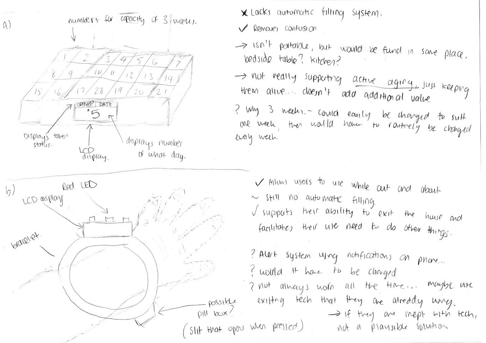
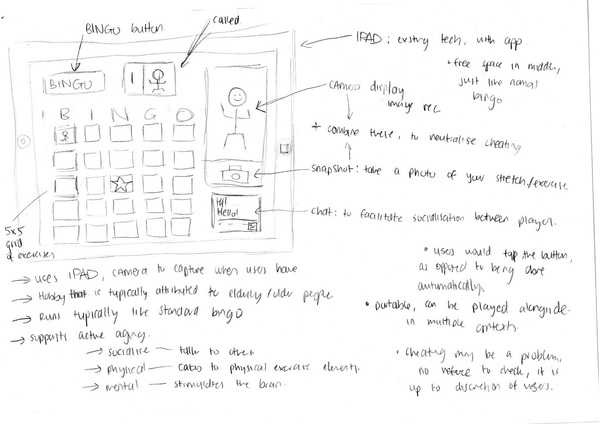
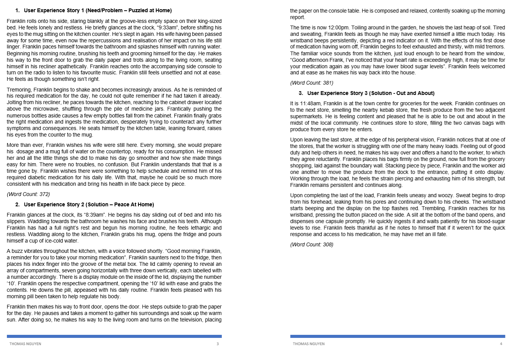
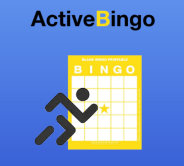
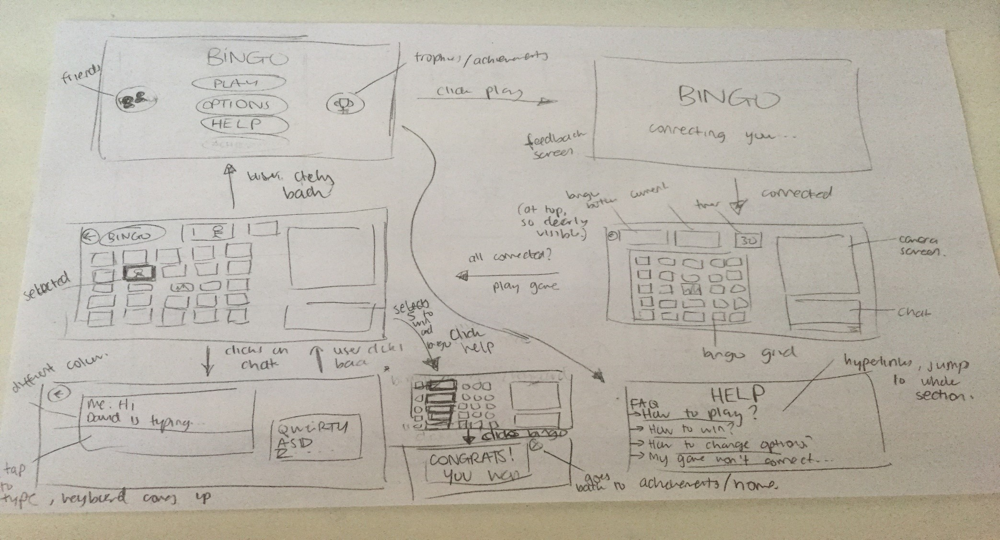
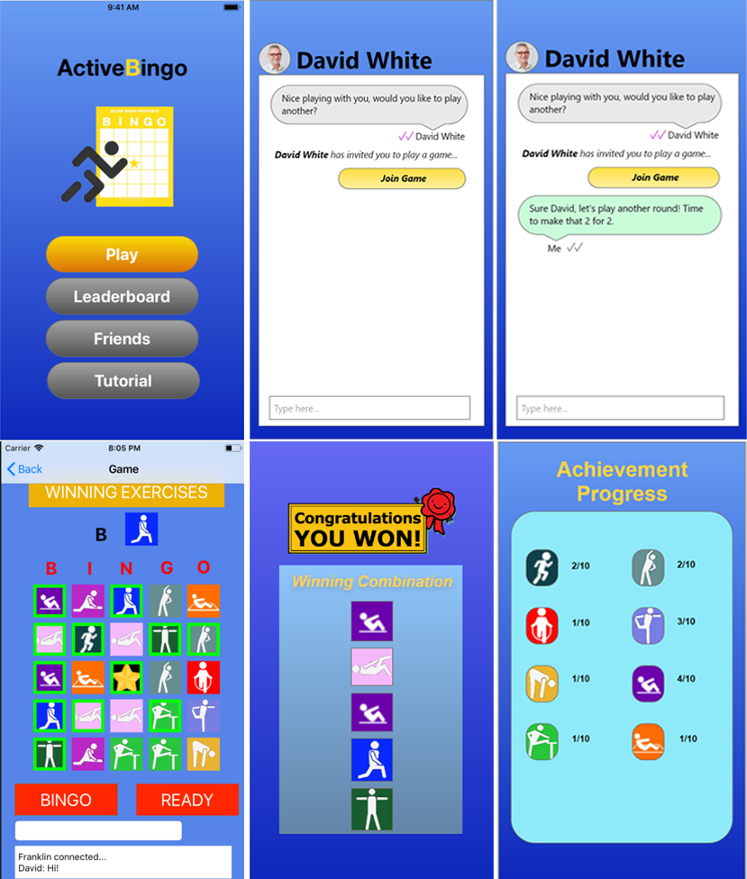

Active Bingo
My role:
This project took place during my final semester at University from July 2019 – October 2019. In a group of 5, I was responsible for leading the overall design and experience. I was also responsible of constructing accompanying UI elements.
The Problem
With the growing elderly population and the divide between generations becoming larger. The aging population can seem quite left without experiences that help accomodate or enhance their experience. Hence, this project focuses on Active Aging. To address the problem, the scope of the project needed to narrow it's focus.
We began by asking around, researching and gathering data on what could not only make life more convienient but also increase the wellbeing and initiate a change in lifestyle or improve quality of life. Upon listening to multiple qualms, we narrowed it to Health and reigniting the connection to society.
The Approach
Upon different approaches, we finally set on the idea of combining a well-known game with physical exercises and social elements. This would allow users to socialise with their friends over long-distances whilst not being physically near others, whilst also allowing them to interact over something simple yet fun with the bonus aspect of staying physically fit. Ultimately, trying to tie the entire experience around promoting health and wellbeing.

Usability Testing / User Studies
We proceeded to seek further feedback on the design and prototype, in order to create a valuable and effective experience for users. We decided upon user usability tests to analyse what functions and aspects of our design needed improvement. Some of the qualms that users presented in the first series of our user and usability study were:
"Not intuitive enough to call Bingo" - Users wanted a more engaging and clear way to call Bingo.
"Leaderboard is cluttered and not inclusive" - Competition did not seem to increase engagement, a new approach in increasing the return playability needed to be brought up.
"Too hard to get started with playing with friends" - This was directly linked to the usability and core functionality of the app, it was too much of as hassle in its current state to play a game together. A more efficient and effective way was required to counteract the inconvienience and frustration of users.
In summary, the findings:
- Usability Issues
- Experience Optimisation
- Progression and Competition
Overview of Final Functional Prototype
Active Bingo, the game of chance Bingo with a , in which the user’s objective is to mark all exercises on their Bingo card as soon as possible in the allocated patterns. The exercises to be performed by the users are called out randomly and the winner of the game is determined by the first person to mark one of the winning patterns and calling out ‘Bingo’. This game is designed as a tool helping facilitate the physical, mental and social needs of individuals regardless of their age. Their minds are mentally stimulated when playing bingo and having the interactivity of online technology to interact with others allow their social needs to be met. Opting to use Bingo as the ‘bridge’ to form bonds builds upon the pre-existing expectations a simple age-old game of bingo, where it is not forcing the user to change drastically by using something familiar, with the intent only to enhance the experience and support active aging. The user experience the prototype aims to support is one of familiarity. It accomplishes this with the basis of the game being one that users similar to that of the persona would have experienced in the past.
Functions:
Registration: For new users the registration page will ask the user to sign up with their
email address. The purpose of registering is to allow the user to create a profile, which will
allow them to find their friends as well and meet new people.
Bingo Game: The bingo game is a fun way of using a familiar game that elderly people play
and incorporating it with exercises instead of numbers. The user will have the choice of
playing a game of 2 to 6 players.
Adjusting Difficulty: The adjusting difficulty function will allow users to choose their level of
experience with the options of “Beginner”, “Intermediate” and “Experienced”. Choosing the
“Beginner” or “Intermediate” will filter out the difficult exercises in the game and will only
randomly churn out the easier exercises.
Find Friends: ActiveBingo has a “Find Friend” feature which enables users to add their
friends and play with them, which may be convenient for them, as it saves them the effort of
having to travel long distances in order to exercise with them. They can also find and add
new friends they meet while playing a game. For some users this may be a feature which
mitigates feelings of loneliness they may experience at times, being home alone all day.
Trophies: The trophies’s function will display the scores and trophies of the players and their
friends. This function will act as a feature to motivate users to play more and achieve a
higher score, seeing their own contributions growing.
Declare Medical conditions: The Declare Medical Conditions feature will allow users to
declare their medical conditions, which will filter out any particular exercises in the game that
may be harmful towards the user’s medical condition. This will minimise any risk of injury or
harm towards the user.
Tutorial: This function will guide new users on how to play the game and walk them through
different ways of winning the game. The tutorial will be a practice game for the player,
interactively highlighting different ways of winning a game.
